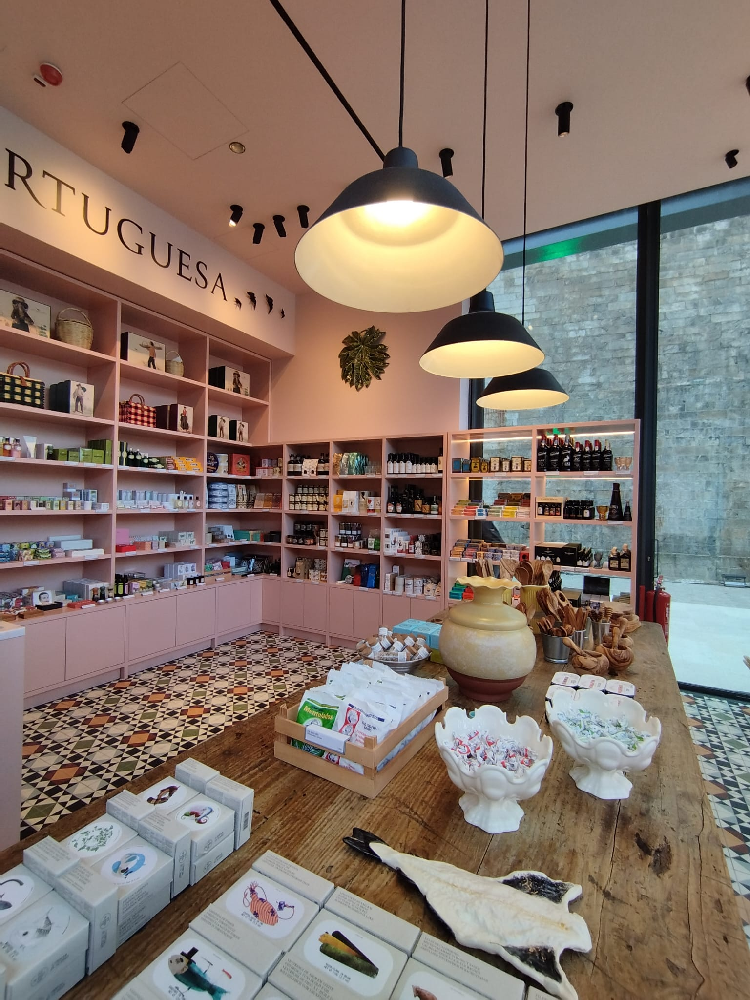

01 · Carpintaria Pinto Lourenço
Carpintaria de interiores
Trabalhos de carpintaria para projetos de raiz, remodelações e reabilitação.
Para começar
Partilhe o espaço, os elementos pretendidos e as plantas ou medidas que já tem.
Preparar um pedidoPartilhe o espaço, os elementos pretendidos e as plantas ou medidas que já tem.